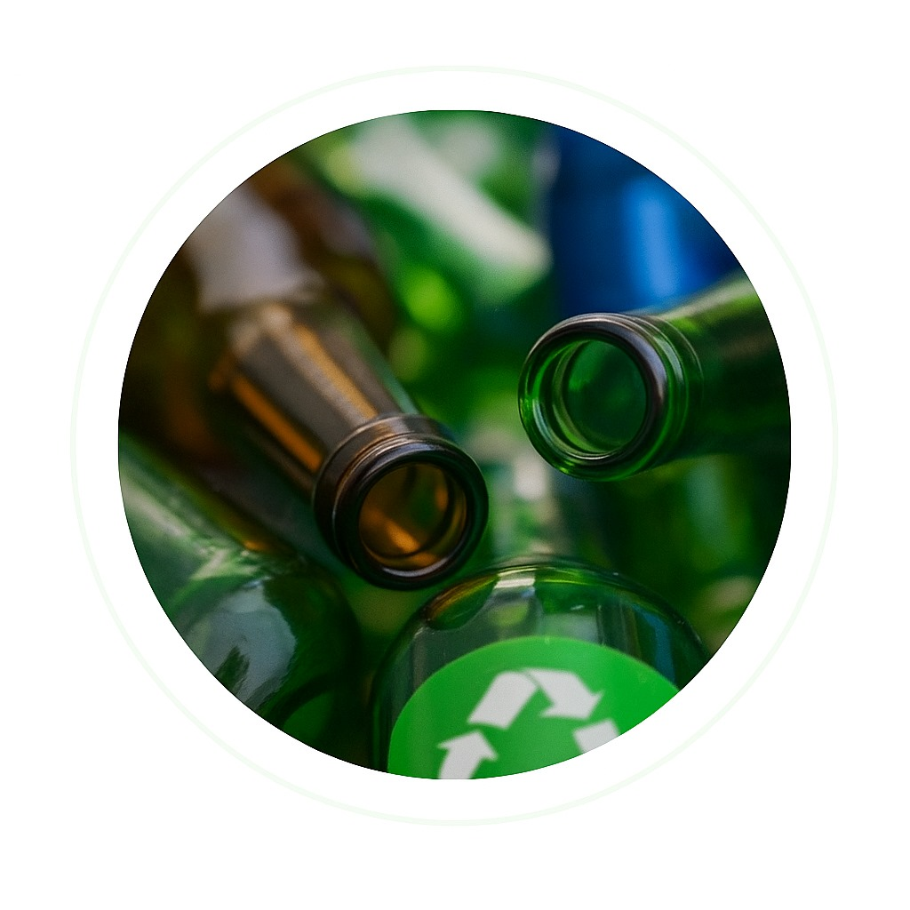
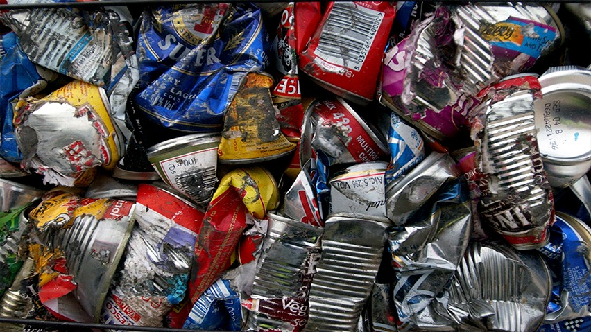
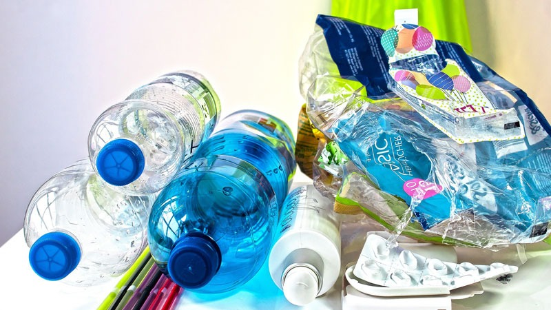
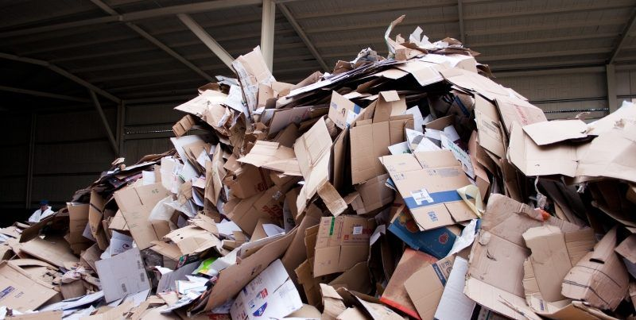

Material 100% reciclable de forma infinita
Proceso de reciclaje: El vidrio se tritura, se funde a 1,500°C y se moldea en nuevos productos sin perder propiedades.
• Ahorra 30% de energía vs. producir vidrio nuevo
• Reduce emisiones de CO₂ en un 20%
• Un envase de vidrio puede reciclarse indefinidamente


Reducción significativa del uso de petróleo
Proceso de reciclaje: Los plásticos se clasifican por tipo, se lavan, se trituran y se funden para crear pellets que formarán nuevos productos.
• Una botella PET tarda 450 años en degradarse
• Reciclando 1 ton de plástico se ahorran 2,000 litros de petróleo
• Se pueden crear: ropa, alfombras, nuevos envases

Residuos reciclables de uso común que pueden transformarse en nuevos productos
Proceso de reciclaje: Se recolecta, clasifica, prensa y se lleva a plantas de reciclaje donde se tritura y convierte en pulpa para fabricar papel y cartón reciclado.
• Reciclar 1 tonelada de papel salva 17 árboles
• Reduce en un 74% la contaminación del aire
• ♻️ Ahorra agua y energía en su producción